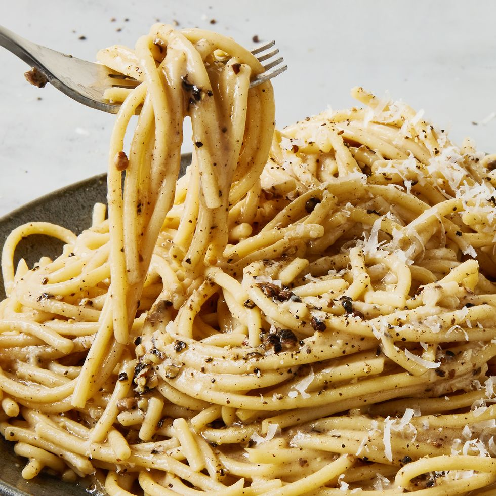

Cacio e Pepe

Cacio e pepe literally translates to “cheese and pepper." These two ingredients are usually thought of as small components to a dish but in this pasta recipe,
they take center stage. Because black pepper is used so often by cooks, we think people often fail to see how much of an incredible primary seasoning it can be.
The fruity bite of freshly ground pepper is complex,
earthy, sweet, and spicy all at once. Making this pasta (and toasting the pepper) is the perfect way to show off that flavor.
Ingredients:
- Kosher salt
- 8 oz. linguine or spaghetti
- 1 tbsp. extra-virgin olive oil
- 2 tbsp. unsalted butter, divided
- Coarsely ground black pepper
- 3/4 c. finely grated Parmesan, plus more for serving
- 3/4 c. finely grated pecorino, plus more for serving
Now let's get to the instructions:
- In a large pot of boiling salted water, cook pasta, stirring occasionally, until very al dente,
about 3 minutes less than package directions. Reserve 2/3 cup pasta water before draining.
- In a large skillet over medium heat, heat oil and 1 tablespoon butter until butter is melted.
Add a generous amount of pepper and toast, stirring frequently, until fragrant, about 1 minute.
- Add 1/2 cup reserved pasta water and bring to simmer. Whisk in remaining 1 tablespoon butter. Using tongs, add pasta, tossing into butter mixture.
- Remove skillet from heat. Gradually add Parmesan and pecorino and toss constantly until cheese is melty.
(If sauce is too thick or clumping, loosen with more pasta water.)
- Divide pasta between bowls. Top with more Parmesan and pecorino.